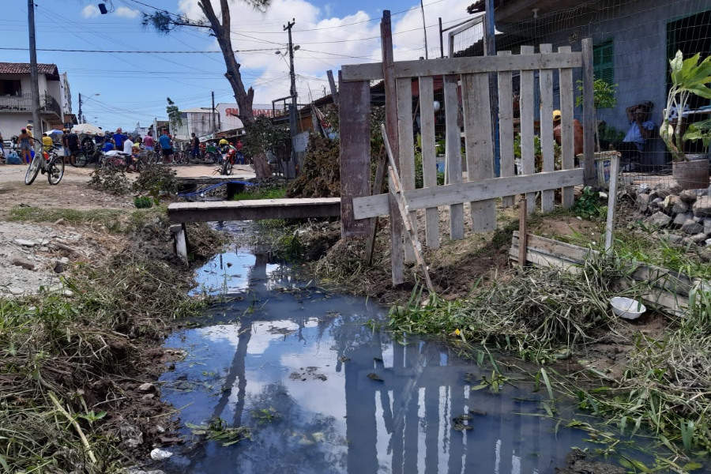
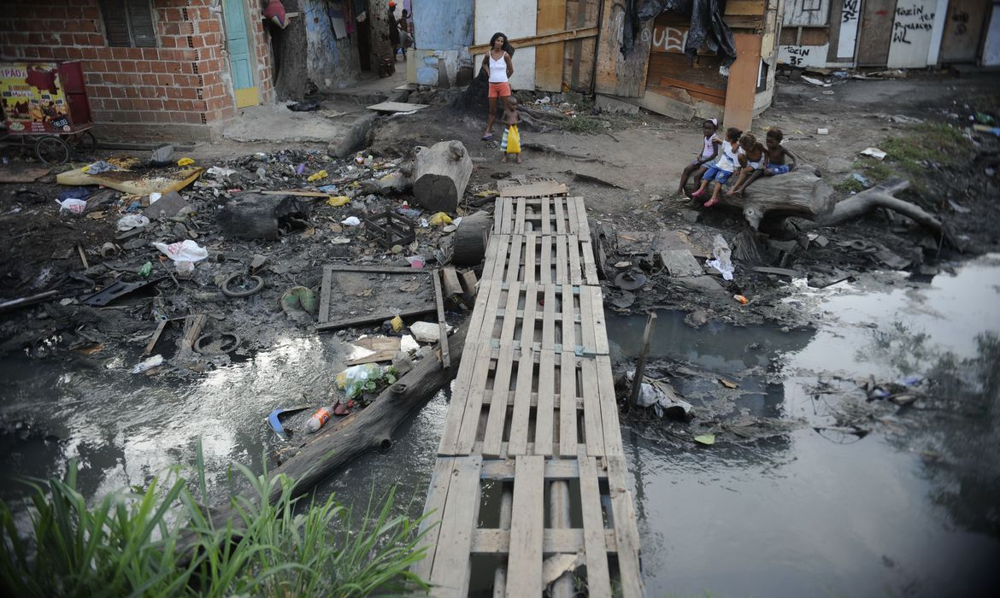

Saneamento Para todos
É um direito que todos devem ter.Com uma proposta de saneamento inteligente o projeto SANEAMENTO PARA TODOS traz para a comunidade as informações de onde possui Saneamento Básico em sua região. Sendo assim se em sua região não possui Saneamento Básico ou se você não conseguiu identificar as caracteristicas que compõe um saneamento básico, aqui você pode estar notificando suas demandas para que o Saneamento seja para Todos !
O esgoto a céu aberto é uma realidade para uma parcela considerável da população..
O esgoto a céu aberto é uma realidade para uma parcela considerável da população. De acordo com dados do Instituto Trata Brasil, quase 100 milhões de brasileiros não têm acesso ao serviço de coleta de esgoto e somente 49% de todo o esgoto gerado no país passa por algum tipo de tratamento.
“Cada um real investido em saneamento básico, economiza 5 reais em saúde devido a prevenção da ocorrência de doenças relacionadas a falta de saneamento básico.”
- Apenas 30% da população possui coleta de esgoto.
- Mais de 39 Milhoões sofrem com ausencia de serviço no Nordeste.
- cerca de 1.315 piscinas olímpicas de esgoto sem tratamento são jogadas no meio ambiente todos os dias.
O Nordeste do Brasil é a região mais afetada pela falta de saneamento básico devido a uma combinação de fatores históricos, econômicos e sociais.